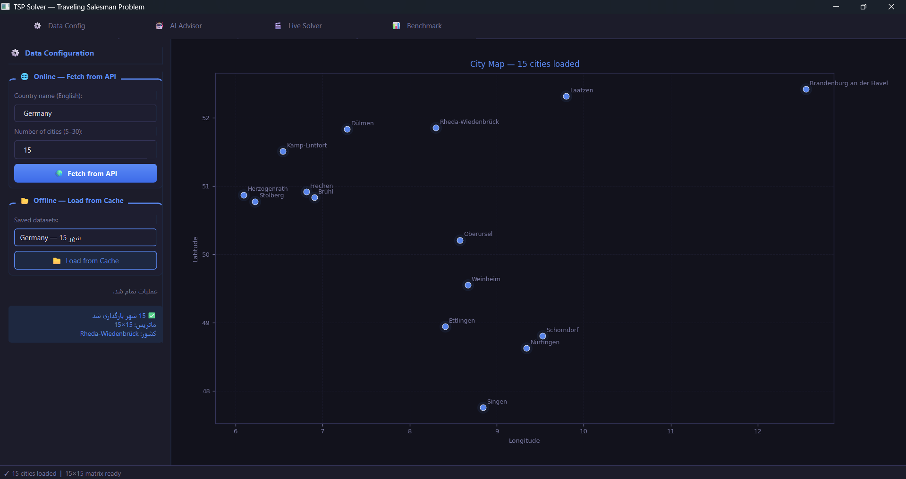
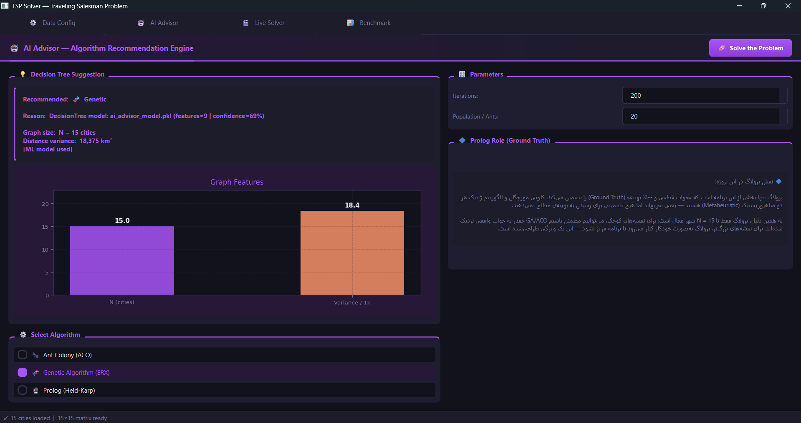
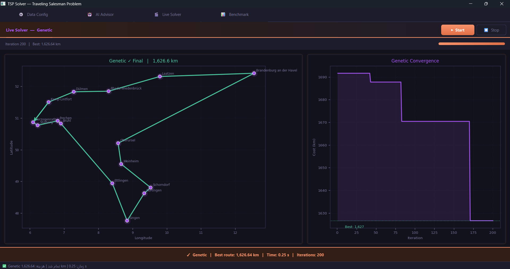
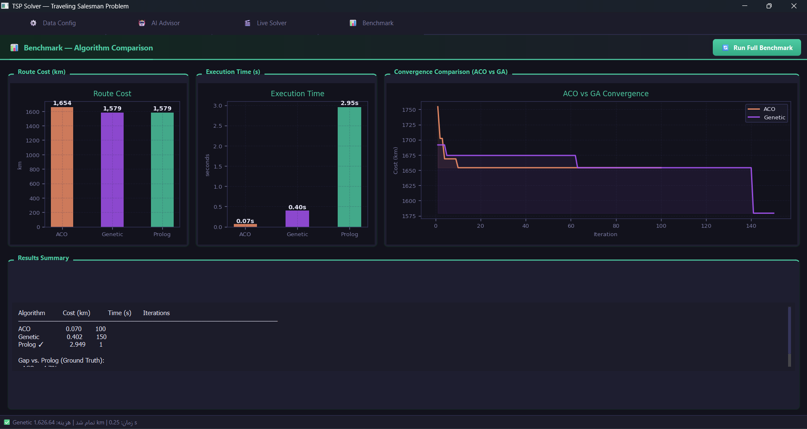

چکیده و معماری کلی پروژه
چکیده پروژه و راهبرد محوری
هدف اصلی این پروژه، حل و مقایسه همهجانبهی مسئله فروشنده دورهگرد (TSP) روی مجموعهای از گرافهای شهری است. در گام نخست، سیستم دادههای جغرافیایی را از طریق فراخوانی API یا سامانه پیشکَش (Cache) محلی واکشی میکند و با استفاده از فرمول هاورساین، ماتریس فواصل میان شهرها را استخراج مینماید. در ادامه، سه رویکرد ساختاری متفاوت برای حل مسئله بهکار گرفته میشوند:
در کنار این سه حلگر، یک مدل درخت تصمیم (Decision Tree) نیز بهعنوان لایهی ارزیاب ساختاری عمل میکند تا بر اساس ویژگیهای گراف ورودی، الگوریتم بهینه را به کاربر پیشنهاد دهد.
معماری این پروژه بر این ایده استوار است که برای ابعاد کوچک گراف از پاسخ کاملاً دقیق و قطعی استفاده شود؛ برای ابعاد متوسط و بزرگ به سراغ روشهای فراابتکاری (Metaheuristic) هدایت شویم؛ و در نهایت با پیادهسازی مدل یادگیری ماشین، انتخاب الگوریتم را از حالت دستی و حدسی به یک فرآیند سیستماتیک و هوشمند تبدیل کنیم.
نقش فایلهای اصلی پروژه در معماری
بهمنظور درک دقیقتر ساختار پیادهسازیشده، پیش از معرفی جدول وظایف، نمای کلی از نحوهی تعامل ماژولهای پروژه با یکدیگر ترسیم شده است. همانطور که در نمودار زیر دیده میشود، رابط گرافیکی دادههای جغرافیایی را به ماتریس فواصل تبدیل میکند، این ماتریس بهصورت موازی در اختیار هر سه حلگر قرار میگیرد، و بهطور مستقل از آن، مدل مشاور هوشمند که بهصورت آفلاین آموزش دیده، در زمان اجرا به رابط کاربری متصل میشود.
جزئیات وظایف و نقش هر یک از ماژولهای پروژه در جدول زیر تفکیک شده است:
| فایل منبع | نقش در معماری سیستم |
|---|---|
| main.py | نقطه ورود اصلی برنامه؛ مدیریت مسیرها، فرآیند ثبت وقایع (Logging)، بررسی وابستگیهای حیاتی و مقداردهی اولیه پنجره اصلی. |
| core.py | مدیریت دادههای جغرافیایی، پیادهسازی مکانیزم حافظه پنهان (Cache)، محاسبه فواصل با فرمول Haversine و تشکیل ماتریس فواصل گراف. |
| solvers.py | پیادهسازی الگوریتمهای فراابتکاری؛ شامل بهینهسازی کلونی مورچگان (ACO) و الگوریتم ژنتیک با اپراتور تقاطع بازترکیب یال (ERX). |
| tsp_solver.pl | حلگر منطقی و دقیق مسئله TSP بر پایه رویکرد برنامهنویسی پویا (Held-Karp)، بههمراه بهینهسازیهای Bitmask و Tabling در محیط SWI-Prolog. |
| prolog_bridge.py | لایه واسط میان پایتون و پرولوگ؛ وظیفه بارگذاری اسکریپت منطقی، نگاشت و انتقال ماتریس فواصل و تبدیل خروجیهای پرولوگ به ساختارهای داده پایتون. |
| train_model.py | تولید مجموعه دادههای ساختگی (Synthetic)، استخراج ویژگیهای توپولوژیک و ساختاری از گراف، آموزش مدل درخت تصمیم (Decision Tree) و سریالسازی فایل مدل مشاور. |
| gui.py | مدیریت لایه گرافیکی؛ اجرای الگوریتمهای سنگین محاسباتی در ریسمانهای مجزا (Threading) جهت جلوگیری از انجماد واسط کاربری، رسم گرافیکی مسیرها و یکپارچهسازی خروجی مدل مشاور. |
لایه داده: نگاشت مختصات جغرافیایی به ماتریس فواصل
مسئله فروشنده دورهگرد (TSP) نیازمند یک گراف کامل وزندار $G=(V, E)$ است که در آن بین هر جفت رأس (شهر) یک یال با وزن مشخص تعریف شده باشد. در این پروژه، موقعیت هر شهر بر اساس طول جغرافیایی ($\lambda$) و عرض جغرافیایی ($\phi$) ذخیره میشود. برای محاسبه فاصله واقعی میان دو نقطه، بهجای فاصله اقلیدسی ساده — که انحنای کره زمین را نادیده میگیرد — از فرمول هاورساین (Haversine Formula) استفاده شده است.
که در آن $R$ شعاع میانگین کره زمین، $\Delta\phi$ تفاضل عرضهای جغرافیایی و $\Delta\lambda$ تفاضل طولهای جغرافیایی دو نقطه است. پس از محاسبهی فواصل دوبهدو، ماتریس مجاورت سیستم تشکیل میشود؛ و از آنجا که گراف مورد نظر یک گراف کامل است، ابعاد ماتریس نهایی دقیقاً برابر $N \times N$ خواهد بود، که در آن $N$ نشاندهندهی تعداد شهرهاست.
- پیچیدگی زمانی (Time Complexity): به دلیل نیاز به محاسبه فاصله برای تمامی زوجشهرها، فرآیند ساخت ماتریس دارای پیچیدگی زمانی $\mathcal{O}(N^2)$ است.
- پیچیدگی فضایی (Space Complexity): ذخیرهسازی این ماتریس متراکم و همبند، نیازمند تخصیص حافظهای از مرتبه $\mathcal{O}(N^2)$ در سیستم خواهد بود.
تحلیل ملاکهای انتخاب الگوریتمها
مسئله فروشنده دورهگرد (TSP) از دایره مسائل کلاسیک $\text{NP-Hard}$ است؛ به این معنا که با افزایش خطی تعداد شهرها، فضای جستوجو و تعداد مسیرهای ممکن بهصورت فوقنمایی ($(N-1)!/2$) رشد میکند. به همین دلیل، اتکا به یک الگوریتم واحد برای تمامی ابعاد گراف منطقی نیست. معماری این پروژه بر پایهی سه دیدگاه محاسباتی متفاوت، در کنار یک لایه هوش پیشبین، شکل گرفته است:
برای دستیابی به پاسخ قطعی (Exact Solution) و ایجاد یک معیار سنجش (Baseline) دقیق. این رویکرد برای مقادیر کوچک $N$ بهینهترین انتخاب است، چرا که با روش برنامهنویسی پویا، بهینه واقعی را تضمین میکند.
برای جستوجوی احتمالاتی و توازی ضمنی در فضای مسئله. این الگوریتم با بهرهگیری از مفهوم فرومون مصنوعی و ضریب تبخیر آن، از دانش انباشتهشده در تکرارهای قبلی برای همگرایی به سمت مسیرهای بهینه استفاده میکند.
برای مدیریت فضاهای جایگشتی بسیار بزرگ در ابعاد بالا. استفاده از اپراتور تقاطع بازترکیب یال (ERX) اختصاصاً برای TSP انتخاب شده، زیرا مجاورت یالهای باکیفیت والدین را حفظ میکند و یالهای تصادفی نامطلوب وارد فرزند نمیکند.
بهعنوان هسته هوشمند مدیریت فراابتکاری (Meta-heuristic). این مدل با تحلیل توپولوژی گراف ورودی بر اساس معیارهایی چون چگالی، انحراف معیار فواصل و ساختارهای خوشهای، الگوریتم بهینه را پیشبینی و پیشنهاد میدهد.
الگوریتم کلونی مورچگان (Ant Colony Optimization)
پیشزمینه و الهام طبیعی
الگوریتم کلونی مورچگان یا Ant Colony Optimization یکی از الگوریتمهای هوش جمعی (Swarm Intelligence) است که در سال ۱۹۹۲ توسط مارکو دوریگو (Marco Dorigo) معرفی شد. این روش بهطور کامل بر اساس رفتار واقعی مورچهها در طبیعت برای یافتن کوتاهترین مسیر میان لانه و منابع غذایی مدلسازی شده است.
مورچهها در طبیعت چگونه کار میکنند؟
مورچهها بینایی بسیار ضعیفی دارند، اما برای جهتیابی و ارتباط با یکدیگر از مادهای شیمیایی به نام فرومون (Pheromone) استفاده میکنند. فرآیند کشف مسیر به این صورت رخ میدهد:
- حرکت تصادفی اولیه: در ابتدا که محیط ناشناخته است، مورچهها بهصورت تصادفی به جستوجو میپردازند و حین حرکت، روی زمین فرومون ترشح میکنند.
- تأثیر طول مسیر بر سرعت رفتوآمد: مورچههایی که بهصورت اتفاقی وارد مسیری کوتاهتر میشوند، سریعتر به غذا میرسند و سریعتر به لانه برمیگردند؛ در نتیجه، در بازه زمانی مشخص، این مسیر کوتاه، رفتوآمد دستهجمعی بیشتری را نسبت به مسیرهای طولانی تجربه میکند.
- تقویت امتیاز مسیر: با افزایش رفتوآمد، غلظت فرومون روی مسیر کوتاه بهسرعت بالا میرود. از آنجا که مورچههای بعدی تمایل دارند مسیرهای با فرومون غلیظتر را انتخاب کنند، کل کلونی بهمرور روی کوتاهترین مسیر همگرا میشود.
- تبخیر فرومون (فراموشی خطاها): فرومونها روی زمین پایداری ابدی ندارند و بهمرور زمان تبخیر میشوند. این ویژگی باعث میشود مسیرهای طولانی و اشتباه که کمتر استفاده میشوند، بوی خود را از دست بدهند و الگوریتم در الگوهای غلط قدیمی گیر نکند.
الگوریتم کلونی مورچگان چگونه مسئله را حل میکند؟
الگوریتم کلونی مورچگان یک روش مبتنی بر تکرار و کار گروهی برای یافتن بهترین مسیر است. در این الگوریتم، بهجای آنکه یک فرمول ریاضی بهتنهایی جواب را پیدا کند، مجموعهای از عاملهای محاسباتی (که آنها را مورچه مینامیم) بارها و بارها مسیرهای مختلف را امتحان میکنند تا بهمرور زمان بهترین مسیر کشف شود.
۱. ارتباط الگوریتم با مسئله فروشنده دورهگرد
برای پیادهسازی این الگوریتم روی مسئله پروژه، اجزای آن به این صورت تعریف شدهاند:
- شهرها: نقاطی هستند که مورچهها باید به همه آنها سر بزنند.
- فاصله شهرها: همان وزن یالها در گراف است؛ هدف، رساندن مجموع این فواصل در کل سفر به کمترین مقدار ممکن است.
- ماتریس فرومون: جدول یا حافظهی مشترکی در برنامه است. هرچه مسیر میان دو شهر بهتر و کوتاهتر باشد، ارزش عددی آن در این جدول بالاتر میرود تا مورچههای بعدی بیشتر به سمت آن جذب شوند.
۲. مراحل گامبهگام حرکت و حل مسئله
برنامه در هر مرحله (Iteration) کارهای زیر را برای رسیدن به جواب بهینه انجام میدهد:
- الف) ساخت مسیر توسط مورچهها: هر مورچه از یک شهر تصادفی شروع میکند. برای انتخاب شهر بعدی، به دو معیار توجه میکند: نزدیکی فاصله (هرچه نزدیکتر، بهتر) و امتیاز جدول فرومون برای آن مسیر. مورچه همچنین فهرستی داخلی دارد تا بهخاطر بسپارد کدام شهرها را پیشتر دیده و دوباره به آنها سر نزند.
- ب) کاهش امتیازها (تبخیر فرومون): در پایان هر مرحله، امتیاز تمام مسیرهای جدول کمی کاهش مییابد تا اثر مسیرهای طولانی و کماستفاده بهمرور محو شود و فضای محاسباتی روی مسیرهای نادرست هدر نرود.
- ج) پاداش به بهترین مسیر (بهروزرسانی نخبگان): طول مسیر تمام مورچهها اندازهگیری میشود. طبق استراتژی پیادهسازیشده در پروژه، تنها مورچهای که کوتاهترین مسیر کل مرحله را یافته، اجازه دارد به جدول فرومون پاداش اضافه کرده و امتیاز مسیر خود را بالا ببرد.
تحلیل فنی و ارزیابی عملکرد الگوریتم ACO
بهمنظور ارزیابی نهایی ماژول کلونی مورچگان، ویژگیهای ساختاری، مزایا، معایب و رفتارهای محاسباتی این الگوریتم در مواجهه با مسئله فروشنده دورهگرد در جدول زیر خلاصه شده است:
| معیار ارزیابی | تحلیل فنی و محاسباتی |
|---|---|
| دلیل انتخاب الگوریتم | مسئله TSP ماهیتی کاملاً گرافی و مسیریابی دارد. الگوریتم ACO نیز اساساً بر پایه یافتن کوتاهترین مسیر در گرافها طراحی شده و انطباق کاملی با این مسئله دارد. |
| مزایای اصلی | انعطافپذیری بالا و امکان تنظیم دقیق پارامترها؛ عملکرد بسیار مطلوب در ابعاد متوسط؛ توانایی بالا در ایجاد توازن میان «جستوجوی مسیرهای جدید» (Exploration) و «استفاده از مسیرهای خوب قبلی» (Exploitation). |
| معایب و محدودیتها | پاسخ ۱۰۰٪ بهینه را تضمین نمیکند؛ وابستگی شدیدی به تنظیم اولیه پارامترها ($\alpha$، $\beta$، $\rho$ و تعداد مورچهها) دارد و در صورت عدم تنظیم دقیق، احتمال گیر افتادن در بهینههای محلی (Local Optima) وجود دارد. |
| پیچیدگی زمانی (Time) | در این پیادهسازی، هر مورچه برای انتخاب هر شهر، شهرهای باقیمانده را پیمایش میکند که هزینه ساخت یک مسیر کامل را به $\mathcal{O}(N^2)$ میرساند. با احتساب تعداد تکرارها ($I$) و تعداد مورچهها ($M$)، پیچیدگی کل برابر $\mathcal{O}(I \times M \times N^2)$ خواهد بود. |
| پیچیدگی فضایی (Memory) | ماتریسهای اصلی سیستم — شامل ماتریس فاصله، ماتریس دید ابتکاری و ماتریس فرومون — همگی ابعادی برابر $N \times N$ دارند؛ از این رو میزان حافظه مصرفی از مرتبه $\mathcal{O}(N^2)$ است. |
| رفتار با افزایش ابعاد گراف | با رشد تعداد شهرها ($N$)، زمان محاسبه بهصورت درجهدو رشد میکند. برای حفظ کیفیت خروجی در ابعاد بالا، باید تعداد تکرارها یا تعداد مورچهها افزایش یابد، که این کار در عمل هزینه زمانی اجرای برنامه را بیش از رشد تئوری نشان میدهد. |
الگوریتم ژنتیک (Genetic Algorithm + ERX)
پیشزمینه و الهام طبیعی
الگوریتم ژنتیک یا Genetic Algorithm یکی از قویترین روشهای بهینهسازی هوشمند است که از نظریه تکامل داروین و اصول ژنتیک طبیعی الهام گرفته شده است. این الگوریتم بر پایهی این ایده پیش میرود که در یک محیط رقابتی، نسلهای بعدی بهمرور زمان، با ترکیب خصوصیات خوب والدین خود، قویتر و باکیفیتتر میشوند.
تکامل در طبیعت چگونه کار میکند؟
طبیعت برای اصلاح و ارتقای نسل موجودات زنده، از مکانیزمهای کلیدی زیر بهره میگیرد:
- بقا و انتخاب برترینها (Selection): موجوداتی که سازگاری بیشتری با محیط دارند، شانس بالاتری برای زندهماندن و انتقال ژنهای خود به نسل بعدی خواهند داشت.
- ترکیب ژنها (Crossover): فرزندان حاصل ترکیب ویژگیهای ژنتیکی دو والد هستند؛ این کار باعث میشود ویژگیهای مثبت هر دو والد در یک فرزند جمع شود.
- جهش ژنتیکی (Mutation): گاهی تغییراتی کاملاً تصادفی در ژنها رخ میدهد. این جهشها تنوع ایجاد میکنند و راههای جدیدی را باز میکنند که میتوانند موجود را قدرتمندتر سازند.
الگوریتم ژنتیک چگونه مسئله TSP را حل میکند؟
۱. ارتباط محاسباتی الگوریتم با مسئله فروشنده دورهگرد
برای پیادهسازی این مکانیزم در پروژه، ویژگیهای ژنتیکی به ساختار زیر نگاشت شدهاند:
- کروموزوم (Chromosome): هر مسیر کامل که شامل ترتیب مشخصی از شهرها باشد، یک کروموزوم (یا یک عضو از جمعیت) در نظر گرفته میشود.
- جمعیت اولیه (Initial Population): مجموعهای از مسیرهای مختلف است. برای شروع هوشمندانه، این جمعیت شامل یک مسیر خوب حاصل از الگوریتم حریصانه (Greedy) و تعدادی مسیر تصادفی است تا توازن اولیه برقرار شود.
- تابع شایستگی (Fitness Function): معکوس طول مسیر است؛ یعنی هرچه مجموع فاصلههای یک مسیر کمتر باشد، امتیاز شایستگی آن عضو بالاتر خواهد بود.
۲. مراحل تکاملی در هر نسل
- الف) انتخاب والدها (Tournament Selection): برنامه چند عضو را بهصورت تصادفی از جمعیت جدا میکند و بهترین آنها را از نظر شایستگی بهعنوان والد انتخاب میکند تا ژنهای برتر شانس بیشتری برای تکثیر داشته باشند.
- ب) تقاطع بازترکیب یال (ERX): این بخش قلب تپندهی ماژول ژنتیک پروژه است. در مسئله TSP، کیفیت یک مسیر به یالها (اتصالات دو شهر) بستگی دارد، نه به موقعیت ترتیبی آنها در لیست. روشهای تقاطع ساده (مانند One-Point Crossover) علاوه بر تولید فرزندان نامعتبر با شهرهای تکراری، اتصالات خوب را نیز از بین میبرند. عملگر ERX یک جدول همسایگی از والدین میسازد و تلاش میکند فرزند جدیدی بسازد که بیشترین تعداد یالهای باکیفیت والدین را به ارث ببرد.
- ج) جهش (Mutation): بهصورت کاملاً تصادفی، جای دو شهر در مسیر با هم عوض میشود. این مکانیزم اجازه میدهد برنامه مسیرهای کاملاً جدید را نیز بیازماید و در بنبست الگوهای تکراری قدیمی گیر نکند.
تحلیل فنی و ارزیابی عملکرد الگوریتم ژنتیک (GA)
بهمنظور ارزیابی عملکرد ماژول تکاملی پروژه، ویژگیهای ساختاری، نقاط قوت، محدودیتها و تحلیل مرتبه اجرایی الگوریتم ژنتیک در جدول زیر تفکیک و خلاصه شده است:
| معیار ارزیابی | تحلیل فنی و محاسباتی |
|---|---|
| دلیل انتخاب الگوریتم | مسئله TSP دارای فضای جستوجوی جایگشتی (Permutation) بسیار بزرگی است. الگوریتم ژنتیک برای جستوجو و یافتن راهحل در فضاهای بسیار بزرگ، گسسته و غیرخطی کارایی فوقالعادهای دارد. |
| مزایای اصلی | توانایی بالا در فرار از بهینههای محلی به کمک جهشهای تصادفی؛ مقیاسپذیری مناسب برای تعداد شهرهای بزرگتر؛ حفظ کروموزومهای برتر هر نسل با مکانیزم نخبگان (Elitism) و سازگاری کامل عملگر ERX با ساختار یالی مسئله. |
| معایب و محدودیتها | پاسخ بهینه مطلق را تضمین نمیکند؛ وابستگی شدیدی به اندازه جمعیت اولیه و نرخ جهش (Mutation Rate) دارد؛ در صورت کوچک بودن جمعیت، امکان ازدسترفتن تنوع ژنتیکی و همگرایی زودرس وجود دارد. |
| پیچیدگی زمانی (Time) | محاسبه شایستگی هر مسیر از مرتبه $\mathcal{O}(N)$ است. برای جمعیتی به اندازهی $P$ در طول $G$ نسل، حداقل هزینهی تئوری برابر $\mathcal{O}(G \times P \times N)$ خواهد بود؛ اما با توجه به پردازشهای عملگر ERX برای ساخت فرزند، هزینه عملی هر نسل افزایش مییابد، بنابراین تخمین محافظهکارانه کل سیستم برابر $\mathcal{O}(G \times P \times N^2)$ است. |
| پیچیدگی فضایی (Memory) | ذخیرهسازی کروموزومهای جمعیت نیازمند حافظهای از مرتبه $\mathcal{O}(P \times N)$ و نگهداری ماتریس فواصل نیازمند حافظهی $\mathcal{O}(N^2)$ است؛ در نتیجه حافظهی غالب مصرفی برنامه برابر $\mathcal{O}(N^2 + P \times N)$ خواهد بود. |
| رفتار با افزایش ابعاد گراف | از نظر زمان اجرا، بسیار مقیاسپذیرتر از روشهای دقیق (مانند Held-Karp) عمل میکند. با این حال، با رشد تعداد شهرها، برای حفظ کیفیت جواب باید اندازه جمعیت یا تعداد نسلها افزایش یابد. در ابعاد بسیار بزرگ، الگوریتم بهجای بهینه واقعی، یک جواب خوب و قابلقبول ارائه میدهد. |
حلگر دقیق پرولوگ (Held-Karp)
چرا زبان پرولوگ (Prolog) برای این بخش انتخاب شد؟
بخش مهمی از اهداف این پروژه، بررسی عملکرد و رفتار یک زبان برنامهنویسی منطقگرا (Logic Programming) در مواجهه با مسائل سخت ترکیبیاتی است. برخلاف زبانهای امری (مانند پایتون یا ++C) که در آنها باید قدمبهقدم نحوهی حل مسئله را کدنویسی کرد، در پرولوگ تنها حقایق و روابط منطقی میان پدیدهها توصیف میشوند و این موتور استنتاجی خود زبان است که به دنبال جواب میگردد.
ویژگی حیاتی: دستیابی به جواب ۱۰۰٪ بهینه (Ground Truth)
الگوریتمهای هوش جمعی و تکاملی (مانند مورچگان و ژنتیک) بر پایهی شانس و احتمال عمل میکنند و هیچگاه تضمین نمیدهند که جواب نهایی واقعاً بهترین مسیر ممکن باشد. به همین دلیل، نیاز به یک حلگر دقیق (Exact Solver) احساس میشد تا نقش «معیار سنجش واقعی» را ایفا کند. حلگر پرولوگ با بررسی دقیق تمام حالتها، جواب ۱۰۰٪ بهینه و قطعی را در اختیار میگذارد تا بتوان میزان خطای الگوریتمهای دیگر را بر مبنای آن سنجید.
اهداف راهبردی دوگانه پرولوگ در پروژه
استفاده از پرولوگ در این پروژه صرفاً به یک حلگر کمکی محدود نمیشود، بلکه دو هدف راهبردی مجزا را دنبال میکند:
- هدف اول — معیار سنجش علمی (Ground Truth): در مسائل با ابعاد کوچک و متوسط، حلگر پرولوگ بهعنوان حقیقت مطلق (Ground Truth) عمل میکند تا با تکیه بر آن، نرخ خطا و صحت عملکرد الگوریتمهای ژنتیک و مورچگان بهطور علمی کالیبره و اثبات شود.
- هدف دوم — مقدمهای بر معماریهای سمبولیک-نورونی: این ساختار، مقدمهای برای معماریهای مدرن هوش مصنوعی سمبولیک-نورونی (Neuro-Symbolic AI) است؛ جایی که محدودیتهای سخت و پیچیدهی منطقِ مسئله (Constraints) بهراحتی و با چند خط کد در هستهی پرولوگ فرموله میشوند و کارِ بهینهسازی فضاهای بسیار بزرگ به بازوهای متاهیوریستیک پایتون سپرده میشود.
الگوریتم Held-Karp و سیاست برنامهنویسی پویا
هستهی محاسباتی حلگر پرولوگ بر پایهی الگوریتم هلد-کارپ (Held-Karp) ساخته شده است؛ یک روش برنامهنویسی پویا (Dynamic Programming) که مسئلهی فروشنده دورهگرد را بدون نیاز به بررسی فاکتوریلِ تمام جایگشتهای ممکن، با پیچیدگی نمایی بهمراتب کوچکتر حل میکند.
۱. ایدهی پایه: زیرمسئلهها و چیرگی بر همپوشانی
روش Brute Force باید تمام $(N-1)!$ جایگشت ممکن را بررسی کند که برای $N$ بزرگتر از حدود ۱۲ عملاً غیرقابلاجراست. هلد-کارپ با این مشاهده که مسیر بهینه از زیرمسئلههای کوچکتر تشکیل شده — و این زیرمسئلهها بارها در شاخههای مختلف جستوجو تکرار میشوند — هزینه را با تعریف یک حالت دوبخشی کاهش میدهد: «کدام مجموعه از شهرها تا کنون دیده شدهاند؟» و «در حال حاضر در کدام شهر ایستادهایم؟».
۲. رابطه بازگشتی برنامهنویسی پویا (DP Recurrence)
اگر $S$ زیرمجموعهای از شهرهای بازدیدشده (بهجز شهر مبدأ) و $j \in S$ آخرین شهر بازدیدشده باشد، تابع $C(S, j)$ هزینهی کمینهی مسیری است که از شهر مبدأ شروع شده، تمام شهرهای $S$ را پیموده و در شهر $j$ به پایان میرسد. رابطه بازگشتی حاکم بر این تابع بهصورت زیر تعریف میشود:
در این فرمولبندی، $d(i,j)$ فاصلهی میان دو شهر $i$ و $j$ (برگرفته از ماتریس هاورساین) است. حالت پایه نشان میدهد هزینهی ایستادن در شهر مبدأ با مجموعهی تکعضوی $\{1\}$ برابر صفر است. رابطهی بازگشتی اصلی نیز میگوید: برای رسیدن به شهر $j$ پس از پیمودن مجموعه $S$، باید بهترین حالت ممکنِ ایستادن در یکی از شهرهای $i \in S$ (پیش از ورود به $j$) را در نظر گرفت و فاصلهی $i \to j$ را به آن افزود. در نهایت، پاسخ کلی مسئله با بستن دور (بازگشت به شهر مبدأ) از میان تمام شهرهای پایانی ممکن به دست میآید.
نکتهی کلیدی در این رابطه آن است که تعداد حالتهای متمایز $(S, j)$ برابر $\mathcal{O}(N \times 2^N)$ است — بهجای $\mathcal{O}(N!)$ در روش Brute Force — و هر حالت تنها یکبار محاسبه میشود؛ دقیقاً همین ویژگی است که سیاست برنامهنویسی پویا را در بخش پرولوگ معنا میبخشد و زمینه را برای بهرهگیری از Tabling در ادامه فراهم میکند.
مکانیزم تفصیلی حل مسئله و نقش Tabling در پرولوگ
پرولوگ بهصورت ذاتی مسائل را با روش «آزمون و خطا و عقبگرد» (Backtracking) حل میکند: یک مسیر را تا انتها دنبال میکند و اگر به بنبست خورد یا مسیر تمام شد، به عقب برمیگردد و شاخهی دیگری را امتحان میکند. در مسئلهای به بزرگی TSP، این عقبگردها باعث میشوند برنامه میلیونها بار محاسبات تکراری انجام دهد. برای جلوگیری از این اتفاق، دو مکانیزم هوشمند در پروژه با یکدیگر ترکیب شدهاند:
۱. مفهوم حالت (State) و مدیریت آن با Bitmask
حلگر پرولوگ پروژه، دقیقاً همان جفتِ $(S, j)$ رابطهی Held-Karp را با دو فاکتور کلیدی نمایش میدهد: «کدام شهرها را تا الان دیدهایم؟» و «در حال حاضر در کدام شهر ایستادهایم؟». برای آنکه این اطلاعات فضای حافظه را اشغال نکنند، مجموعهی شهرهای دیدهشده به یک رشته از صفر و یک (Bitmask) تبدیل میشود. برای نمونه، اگر ۵ شهر وجود داشته باشد و شهرهای اول و سوم پیموده شده باشند، وضعیت بهصورت 10100 ذخیره میشود. این روش باعث میشود مقایسهی حالتها در سریعترین زمان ممکن در حافظه انجام شود.
۲. جادوی Tabling (یادداشتبرداری هوشمند) چیست و چه میکند؟
مکانیزم tabling در واقع همان حافظهسپاری (Memoization) در لایهی موتور داخلی زبان پرولوگ است؛ یعنی پیادهسازی عملیِ همان «هر حالت تنها یکبار محاسبه شود» که در رابطه بازگشتی بالا بیان شد.
فرض کنید برنامه میخواهد بداند از شهر شماره ۴، چگونه باید به بقیهی شهرهای باقیمانده برود تا کوتاهترین مسیر حاصل شود. پرولوگ شروع به محاسبه میکند و پس از کلی عقبگرد، بهترین جواب را برای این وضعیت پیدا میکند. بدون Tabling، اگر برنامه از شاخهی دیگری دوباره به شهر شماره ۴ برسد، تمام آن محاسبات سنگین را از ابتدا تکرار میکند.
اما با فعال بودن Tabling، موتور SWI-Prolog مانند یک دستیار هوشمند عمل میکند: بهمحض اینکه جواب یک وضعیت (مثلاً ایستادن در شهر ۴ با مجموعهی مشخصی از شهرهای باقیمانده) پیدا شد، آن را در یک جدول داخلی یادداشت میکند. دفعهی بعد که برنامه در جریان جستوجوهایش به همان وضعیت برسد، هیچ محاسبهای از نو انجام نمیشود؛ بلکه فوراً نگاهی به جدول میاندازد، جواب را برمیدارد و مسیرش را ادامه میدهد.
۳. فرآیند گامبهگام استخراج جواب بهینه مطلق
- گام اول (تقسیم مسئله): پرولوگ مسئلهی اصلی (یافتن کل مسیر) را به زیرمسئلههای کوچکتر خرد میکند: «برای یافتن بهترین مسیر کل، باید دید از شهر فعلی به کدامیک از شهرهای ندیده برویم تا مجموع فاصلهی فعلی و بهترین مسیرِ باقیمانده کمترین مقدار شود؟»
- گام دوم (حرکت عمقی و یادداشتبرداری): برنامه بهصورت عمقی پیش میرود تا به انتهای مسیر (زمانی که همهی شهرها دیده شدهاند) برسد. در مسیر بازگشت، جواب هر مرحله در جدول Tabling ذخیره میشود.
- گام سوم (برداشت پاسخ قطعی): از آنجا که این ساختار تمام ترکیبهای ممکن را بهصورت بهینه و بدون تکرار محاسبات موازی پیمایش میکند، در نهایت گزارهی اصلی برنامه عددی را بهعنوان هزینهی کل برمیگرداند که کوچکترین طول مسیر ممکن در کل گراف است؛ یعنی تضمین ۱۰۰٪ بهینگی، بدون حتی یک درصد احتمال خطا.
تحلیل فنی و ارزیابی عملکرد حلگر دقیق پرولوگ (Held-Karp)
بهمنظور ارزیابی نهایی لایهی منطقگرای پروژه، ویژگیهای محاسباتی، نقاط قوت، محدودیتهای ساختاری و رفتارهای مرتبه اجرایی الگوریتم هلد-کارپ در جدول زیر خلاصه شده است:
| معیار ارزیابی | تحلیل فنی و محاسباتی |
|---|---|
| دلیل انتخاب الگوریتم | دستیابی به پاسخ بهینهی مطلق و ۱۰۰٪ قطعی در ابعاد کوچک؛ ایجاد یک معیار سنجش واقعی (Ground Truth) تا میزان خطای الگوریتمهای فراابتکاری (ACO و GA) بر اساس آن ارزیابی شود. |
| مزایای اصلی | تضمین ریاضی برای یافتن کوتاهترین مسیر ممکن؛ استفادهی هوشمندانه از قابلیت tabling و ساختار bitmask برای حذف کامل محاسبات تکراری موازی و بازدهی بسیار بالاتر نسبت به روش جستوجوی کل فضای حالت (Brute Force). |
| معایب و محدودیتها | ماهیت پیچیدگی نمایی؛ مصرف بالای حافظه به دلیل ذخیرهی جداول بازگشتی؛ عدم کارایی برای تعداد شهرهای بالا (به همین دلیل در تنظیمات پروژه حد مجاز ایمن روی $N \le 15$ قفل شده است). |
| پیچیدگی زمانی (Time) | پیچیدگی زمانی الگوریتم هلد-کارپ برابر $\mathcal{O}(N^2 \times 2^N)$ است. این مقدار هرچند رشد نمایی دارد، بهبود بسیار بزرگی نسبت به روش Brute Force با پیچیدگی فاکتوریل $\mathcal{O}(N!)$ ایجاد میکند. |
| پیچیدگی فضایی (Memory) | جدول برنامهنویسی پویا (Tabling) باید تمام حالتهای ترکیب زیرمجموعهها و شهر پایانی را مستند کند؛ بنابراین میزان حافظهی مصرفی سیستم از مرتبه $\mathcal{O}(N \times 2^N)$ خواهد بود. |
| رفتار با افزایش ابعاد گراف | تا زمانی که تعداد شهرها کم باشد، زمان پاسخدهی آنی و بینقص است. اما با عبور از یک آستانهی مشخص، رشد نمایی باعث انفجار محاسباتی و قفلشدن حافظه میشود؛ در چنین سناریوهایی سیستم باید بهصورت خودکار وظیفهی حل را به الگوریتمهای هوش جمعی یا تکاملی بسپارد. |
موتور مشاور هوشمند (Decision Tree)
💡 فلسفه و مفهوم ماژول مشاور هوشمند الگوریتم
در دنیای واقعی و کاربردهای صنعتی هوش مصنوعی، هیچ الگوریتمی وجود ندارد که برای «همه نوع دادهای» بهترین باشد. گاهی برای یک چینش خاص از شهرها، الگوریتم ژنتیک سریعتر همگرا میشود و گاهی کلونی مورچگان عملکرد بهتری از خود نشان میدهد. از طرفی، اجرای موازی یا حدسی همهی الگوریتمها هزینهی محاسباتی سنگینی دارد.
هدف از طراحی مشاور هوشمند (AI Advisor) در این پروژه، افزودن یک لایهی تصمیمگیر فوقانی به نرمافزار است. این ماژول پیش از اجرای هرگونه فرآیند سنگین، ابتدا ساختار هندسی و ویژگیهای فیزیکی شهرها را بررسی میکند و بر اساس تجربهای که از پیش کسب کرده، هوشمندانه پیشبینی میکند که کدام الگوریتم میتواند در کمترین زمان، بهترین پاسخ را برای این مسئلهی خاص تولید کند.
ساختار فنی و فرآیند تصمیمگیری مدل مشاور
۱. بسته کامل مدل (Model Package) و پایگاه داده فرضی
مکانیزم هوشمند این بخش بهصورت یک اسکریپت آفلاین به نام train_model.py طراحی شده است. این اسکریپت با تولید مجموعهای از گرافهای تصادفیِ مصنوعی با ویژگیهای هندسی گوناگون، هر سه الگوریتم پروژه را روی آنها میآزماید و الگوریتم برنده را از نظر تعادل سرعت و کیفیت پاسخ مشخص میکند. خروجی این فرآیند تکمیلی بهصورت یک فایل پیکل آماده در مسیر ml_models/tree_classifier.pkl ذخیره میشود که شامل اجزای زیر است:
- مدل درخت تصمیم (DecisionTreeClassifier): هستهی اصلی پیشبینی و دستهبندی که با Scikit-Learn آموزش دیده است.
- ابزار استانداردسازی (StandardScaler): برای هممقیاس کردن ویژگیهای عددی ورودی.
- نگاشت برچسبها (Labels Mapping): شناسهی الگوریتمهای هدف (عدد ۰ برای حلگر دقیق پرولوگ، ۱ برای کلونی مورچگان و ۲ برای الگوریتم ژنتیک).
مهندسی داده: موتور تولید شهرهای مصنوعی
پیش از استخراج ویژگی و آموزش مدل، باید مجموعهای متنوع از نقشههای شهری ساخته شود تا درخت تصمیم بتواند الگوهای متفاوت را یاد بگیرد. این وظیفه بر عهدهی تابع _generate_synthetic_cities است که در دو حالت مجزا عمل میکند:
- توزیع یکنواخت (Uniform Distribution): شهرها کاملاً تصادفی در یک مستطیل جغرافیایی پراکنده میشوند؛ حالتی که نقشهی کشورهایی مانند ایران یا آلمان را شبیهسازی میکند.
- توزیع خوشهای (Clustered Distribution): ابتدا چند مرکز تصادفی بهعنوان «خوشه» تعریف میشوند و سپس شهرها با توزیع گاوسی (نرمال) دور هر مرکز پراکنده میگردند؛ حالتی که نقشههای دارای چند شهر بزرگ محوری را بازتولید میکند.
پارامترهای ورودی این تابع — تعداد شهرها، مرکز جغرافیایی، شعاع پراکندگی، فعال یا غیرفعال بودن حالت خوشهای، تعداد خوشهها و یک مقدار seed برای تکرارپذیری — امکان تولید طیف وسیعی از سناریوهای آموزشی را فراهم میکنند:
# ============================================================================= # بخش ۱: موتور تولید داده — ساخت شهرهای مصنوعی # ============================================================================= def _generate_synthetic_cities( n_cities: int, lat_center: float = 35.0, # مرکز عرض جغرافیایی (پیشفرض: ایران) lon_center: float = 50.0, # مرکز طول جغرافیایی spread_km: float = 500.0, # شعاع پراکندگی شهرها به کیلومتر cluster_mode: bool = False, # آیا شهرها بهصورت خوشهای باشند؟ n_clusters: int = 3, # تعداد خوشهها (اگر cluster_mode=True) seed: Optional[int] = None # seed برای تکرارپذیری ) -> list[City]: """ تولید لیستی از شهرهای مصنوعی با مختصات جغرافیایی تصادفی. """ # تنظیم seed برای تکرارپذیری نتایج — هر بار با همین seed، همان نقشه rng = random.Random(seed) # تبدیل شعاع کیلومتری به درجهی جغرافیایی (تقریب ساده) # هر درجهی عرض جغرافیایی ≈ ۱۱۱ کیلومتر lat_spread_deg = spread_km / 111.0 lon_spread_deg = spread_km / (111.0 * max(0.1, math.cos(math.radians(lat_center)))) cities = [] if not cluster_mode: # ─── حالت ۱: توزیع یکنواخت (Uniform Distribution) ─── for i in range(n_cities): lat = rng.uniform(lat_center - lat_spread_deg, lat_center + lat_spread_deg) lon = rng.uniform(lon_center - lon_spread_deg, lon_center + lon_spread_deg) cities.append(City(index=i, name=f"City_{i}", lat=lat, lon=lon)) else: # ─── حالت ۲: توزیع خوشهای (Clustered Distribution) ─── cluster_spread = spread_km / (n_clusters * 1.5) cluster_lat_deg = cluster_spread / 111.0 cluster_lon_deg = cluster_spread / (111.0 * max(0.1, math.cos(math.radians(lat_center)))) # تعیین مرکز هر خوشه بهصورت تصادفی cluster_centers = [ (rng.uniform(lat_center - lat_spread_deg * 0.7, lat_center + lat_spread_deg * 0.7), rng.uniform(lon_center - lon_spread_deg * 0.7, lon_center + lon_spread_deg * 0.7)) for _ in range(n_clusters) ] for i in range(n_cities): center_lat, center_lon = rng.choice(cluster_centers) # پراکنده کردن شهر دور مرکز با توزیع گاوسی (sigma = یکسوم فاصلهی پراکندگی) lat = rng.gauss(center_lat, cluster_lat_deg / 3.0) lon = rng.gauss(center_lon, cluster_lon_deg / 3.0) lat = max(-89.9, min(89.9, lat)) lon = max(-179.9, min(179.9, lon)) cities.append(City(index=i, name=f"City_{i}", lat=lat, lon=lon)) return cities
با تغییر این پارامترها — بهخصوص فعالسازی cluster_mode و تعداد خوشهها — موتور تولید داده میتواند طیف وسیعی از توپولوژیهای شهری را شبیهسازی کند؛ از پراکندگی کاملاً یکنواخت تا چیدمان چندقطبی با چند هستهی شهری اصلی. همین تنوع، اساس آموزش درخت تصمیم برای تشخیص الگوهای ساختاری متفاوت گرافهاست.
ویژگیهای ورودی (Features) و برچسب خروجی (Label)
مدل درخت تصمیم بر اساس ۹ ویژگی توپولوژیک و آماری استخراجشده از ماتریس فواصل تصمیمگیری میکند. این ویژگیها هم ابعاد مسئله را پوشش میدهند و هم ساختار هندسی و توزیع فضاییِ شهرها را توصیف میکنند:
| # | ویژگی | توضیح |
|---|---|---|
| ۱ | n_cities | تعداد شهرها — اصلیترین عامل تعیینکنندهی پیچیدگی مسئله. |
| ۲ | coord_variance | واریانس مختصات شهرها — معیار پراکندگی جغرافیایی کلی نقشه. |
| ۳ | dist_mean | میانگین فواصل بین شهرها (km) — اندازهی کلی نقشه. |
| ۴ | dist_std | انحراف معیار فواصل — یکنواختی توزیع شهرها. |
| ۵ | dist_cv | ضریب تغییرات (std/mean) — نسبیسازی پراکندگی فاصله. |
| ۶ | density_proxy | تراکم تخمینی: $n / \sqrt{\text{area}_{km^2}}$ — چگالی شهری. |
| ۷ | nn_ratio | نسبت میانگین نزدیکترین همسایه به میانگین کل فواصل. |
| ۸ | dist_skewness | کجی توزیع فواصل — تشخیص خوشههای شهری (Cluster). |
| ۹ | max_min_ratio | نسبت بیشترین به کمترین فاصله — شاخص انتشار جغرافیایی. |
برچسب خروجی (Label)
بر اساس این ۹ ویژگی، مدل گراف ورودی را در یکی از سه دستهی زیر طبقهبندی میکند:
| برچسب | الگوریتم | شرط معمول انتخاب |
|---|---|---|
| 0 | Prolog (Held-Karp, Exact) | برای $N$های کوچک که حلگر دقیق پرولوگ در زمان معقول اجرا میشود. |
| 1 | ACO (Ant Colony) | وقتی مسئله ابعاد متوسط دارد یا از ساختار هندسی خاصی برخوردار است. |
| 2 | Genetic Algorithm | وقتی مسئله بزرگ است یا توزیع فضایی شهرها غیریکنواخت است. |
۳. روال جریان داده و نحوه فراخوانی در رابط کاربری (PyQt6 UI)
- گام اول (دریافت و پردازش اولیه داده): پس از اینکه کاربر نام کشور و تعداد شهرهای مدنظرش را در تب اول مشخص کرد، سیستم مختصات جغرافیایی را (بهصورت آنلاین از API یا آفلاین از فایلهای کَش JSON) بارگذاری کرده و ماتریس فواصل را تشکیل میدهد.
- گام دوم (تحلیل آنی هندسه گراف): با ورود کاربر به تب دوم (مشاور هوشمند) و فشردن دکمهی «تحلیل گراف»، هر ۹ ویژگی ساختاری از ماتریس فواصل استخراج شده، از ابزار Scaler عبور میکنند و به مدل tree_classifier.pkl تزریق میشوند.
- گام سوم (نمایش پیشنهاد هوشمند): مدل درخت تصمیم با تحلیل ویژگیها، خروجی دستهبندی را مشخص میکند و سیستم متنی متناسب با ابعاد مسئله را در رابط کاربری نشان میدهد؛ برای مثال: «با توجه به ابعاد و چیدمان این نقشه، پیشنهاد میکنم از پرولوگ استفاده کنی چون جواب قطعی را میدهد» یا «پیشنهاد من کلونی مورچگان است چون در این ابعاد سریعتر همگرا میشود».
جمعبندی مقایسهای و رفتار مقیاسپذیری
📊 مقایسه نهایی و جمعبندی رویکردهای حل مسئله (Benchmark Synthesis)
بهعنوان نتیجهگیری بخشهای پیادهسازی و ارزیابی فنی، جدول زیر دیدی کلان و مقایسهای از رفتار محاسباتی، نوع پاسخ و قلمرو عملیاتی هر سه حلگر پروژه (منطقگرا، هوش جمعی و تکاملی) را در کنار یکدیگر ارائه میدهد:
| الگوریتم و رویکرد | ماهیت و نوع جواب | پیچیدگی زمانی (Time) | بهترین قلمرو کاربردی در پروژه |
|---|---|---|---|
| Prolog / Held-Karp | دقیق، قطعی و ۱۰۰٪ بهینه | $\mathcal{O}(N^2 \times 2^N)$ | تعداد شهرهای محدود و کوچک (زیر ۱۲ تا ۱۵ شهر)؛ ایجاد معیار سنجش واقعی (Ground Truth) برای کالیبره کردن سایر ماژولها. |
| کلونی مورچگان (ACO) | تقریبی / فراابتکاری (هوش جمعی) | $\mathcal{O}(I \times M \times N^2)$ | ابعاد و تعداد شهرهای متوسط؛ بسیار مناسب برای تحلیل بصری، پویایی و مشاهدهی زندهی روند تغییرات و همگرایی کلونی. |
| ژنتیک تکاملی (GA + ERX) | تقریبی / فراابتکاری (تکاملی) | $\mathcal{O}(G \times P \times N^2)$ | تعداد شهرهای بزرگ و گرافهای گسترده؛ کارایی بالا در مدیریت فضاهای جایگشتی عظیم به کمک ساختار عملگر بازترکیب یال. |
نمودار مقایسهای رشد پیچیدگی الگوریتمها
نمودار زیر روند رشد نظریِ هزینهی محاسباتی هر سه رویکرد را در مقیاس لگاریتمی، بر حسب افزایش تعداد شهرها ($N$)، به نمایش میگذارد. فاصلهی فزایندهی منحنی Held-Karp از دو منحنی دیگر، بهخوبی ماهیت نمایی این الگوریتم را در برابر رفتار تقریباً درجهدوی ACO و GA نشان میدهد:
![نمودار مقایسه رشد پیچیدگی الگوریتمها]()
📈 تحلیل عملکرد سیستم با افزایش ابعاد مسئله (Scaling Behavior)
با افزایش تعداد شهرها ($N$)، فضای جستوجوی مسئله فروشنده دورهگرد دچار رشد فاکتوریل میشود. اگر بخواهیم مسیرها را بهصورت آزمون و خطای ساده (Brute Force) بررسی کنیم، تعداد حالتهای ممکن برابر با $(N-1)!$ خواهد بود که حتی برای مقادیر متوسط $N$ نیز عملاً غیرقابلمحاسبه است. معماری این پروژه برای مدیریت این انفجار ترکیبیاتی، یک استراتژی سهلایه را بر اساس ابعاد گراف اتخاذ میکند:
- ابعاد کوچک ($N$ محدود): حلگر دقیق Prolog / Held-Karp وارد عمل میشود تا بدون اتکا به احتمالات، پاسخ قطعی و ۱۰۰٪ بهینه را بهعنوان مبنای مقایسه استخراج کند.
- ابعاد متوسط: الگوریتم کلونی مورچگان (ACO) گزینهی بهینهای است؛ چرا که با تنظیم هوشمندانهی تعداد مورچهها و دفعات تکرار، تعادل فوقالعادهای میان سرعت و دقت برقرار میکند.
- ابعاد بزرگ و گسترده: الگوریتم ژنتیک (GA + ERX) کارایی بالاتری نشان میدهد؛ زیرا با تکیه بر عملگر بازترکیب یال، در فضاهای جایگشتی بسیار عظیم بهصورت تکاملی به سمت جوابهای باکیفیت همگرا میشود.
⚠️ چالش کیفیت جواب در ابعاد بالا
یک نکتهی کلیدی در تحلیل این رفتار آن است که افزایش تعداد شهرها صرفاً زمان اجرای برنامه را طولانی نمیکند، بلکه کیفیت پاسخهای تقریبی را نیز مستقیماً تحت تأثیر قرار میدهد. اگر ابعاد مسئله بزرگ شود اما پارامترهای کنترلکننده مانند تعداد تکرارها (Iterations)، اندازهی جمعیت ژنتیک یا تعداد مورچهها ثابت بمانند، الگوریتمهای فراابتکاری فضای کافی برای اکتشاف کامل گراف را نخواهند داشت و در نتیجه، کیفیت پاسخ افت میکند.
نمونه خروجی و رابط کاربری برنامه
🖥️ بخش اول: پیکربندی و بارگذاری لایه داده (Data Configuration UI)

مکانیزمهای فعال در این پنجره:
- پنل سمت چپ (Online/Offline Loading): کاربر نام کشور (در اینجا Germany) و تعداد شهرهای مدنظرش ($N=15$) را وارد میکند. سیستم ابتدا فولدر کَش محلی (data_cache/) را بررسی کرده و در صورت عدم وجود داده، مختصات را از طریق API آنلاین دریافت و بلافاصله کَش میکند.
- گراف مرکزی (Matplotlib Integration): بهمحض لود شدن دادهها، مختصات جغرافیایی (طول و عرض جغرافیایی) شهرها استخراج شده و بهصورت نقاط پراکنده بر روی یک نمودار Matplotlib تعبیهشده در پنل اصلی نمایش داده میشوند تا نمای فیزیکی اولیهی مسئله مشخص شود.
🧠 بخش دوم: لایه تحلیل هوشمند و موتور توصیهگر (AI Advisor Engine)
این تب اصلیترین بخش تصمیمگیری سیستم است؛ با فعالسازی دکمهی «تحلیل گراف»، ویژگیهای ساختاری مسئله به لایهی یادگیری ماشین فرستاده میشوند تا بهینهترین الگوریتم پیشبینی شود.

تحلیل فنی و اجزای پنجره مشاور هوشمند:
- پنجره پیشنهاد درخت تصمیم (Decision Tree Suggestion): این پنل فایل مدل آماده (tree_classifier.pkl) را فراخوانی میکند. مدل بر اساس ویژگیهای گراف ورودی، الگوریتم Genetic را بهعنوان گزینهی برنده پیشنهاد داده است.
- مفهوم درصد اطمینان (Confidence = 69%): این شاخص نشان میدهد درخت تصمیم پس از ارزیابی ساختار فعلی گراف در مقایسه با مجموعهی گرافهای متفاوتی که در زمان آموزش آفلاین دیده، با احتمال ۶۹٪ حدس میزند الگوریتم ژنتیک توازن بهتری میان سرعت محاسبات و کیفیت پاسخ (طول مسیر) نسبت به دو روش دیگر برقرار میکند.
- نمودار ویژگیهای گراف: در بخش Graph Features، مقادیر فعلی ویژگیهای ورودی مدل — از جمله تعداد شهرها ($N=15$) و واریانس فواصل ($18{,}375\ \text{km}^2$) — به تصویر کشیده میشوند. واریانس فواصل نشاندهندهی میزان پراکندگی یا خوشهبندی شهرها روی نقشه است: واریانس بالا یعنی فواصل بین شهرها نوسان شدیدی دارد، که به مدل میفهماند برخی یالها بسیار طولانی و برخی بسیار کوتاهاند؛ این توزیع هندسی مستقیماً روی رفتار تبخیر فرومون در ACO یا حفظ ساختار یالها در عملگر ERX ژنتیک اثرگذار است.
- پنجره تنظیمات پارامترها (Parameters): به کاربر اجازه میدهد فرامشخصات الگوریتمهای فراابتکاری (مانند تعداد تکرارها یا اندازهی جمعیت) را پیش از اجرا بهصورت پویا تنظیم کند تا رفتار همگرایی کالیبره شود.
🔄 بخش سوم: پایش زنده و نمودار همگرایی فرآیند حل (Live Solver & Convergence)
این تب فرآیند حل مسئله را بهصورت چندرشتهای (Multi-Threading) مدیریت میکند تا محاسبات سنگین در یک نخ پسزمینه (QThread) بدون فریز کردن رابط کاربری گرافیکی اجرا شوند.

مفهوم و معنای پنجره همگرایی ژنتیک (Genetic Convergence):
نمودار سمت راست که با عنوان Genetic Convergence مشخص شده، نمودار تغییرات تابع برازش (Cost Function) در طول تکرارها (Iterations) است. محور عمودی طول کل مسیر پیداشده به کیلومتر و محور افقی شمارهی نسل یا تکرار الگوریتم را نشان میدهد.
- رفتار پلهای منحنی: این رفتار نزولی اثبات میکند که عملگر پیشرفتهی بازترکیب یال (ERX) با حفظ ویژگیهای برتر والدین توانسته مسیرهای کوتاهتر و بهینهتری تولید کند و هزینه را از حدود ۱۶۹۰ کیلومتر بهتدریج کاهش داده و روی عدد ۱۶۲۶.۶۴ کیلومتر قفل کند.
- بصریسازی آنی: سیستم به کمک ساختار pyqtSignal در هر چند نسل، بهترین کروموزوم را به لایهی گرافیکی میفرستد و خطوط سبزرنگ روی نقشهی سمت چپ را بهصورت پویا بهروزرسانی میکند تا فرآیند تکامل برای کاربر ملموس باشد.
📊 بخش چهارم: داشبورد بنچمارک و ارزیابی تطبیقی حلگرها (Benchmarking Analytics)
تب پایانی سیستم وظیفهی اجرای همزمان و ارزیابی عمیق هر سه رویکرد پروژه (مورچگان، ژنتیک و پرولوگ) را روی نقشهی بارگذاریشده بر عهده دارد تا دادههای لازم برای تحلیلهای آماری مهیا شوند.

تحلیل خروجیهای نمودار و جدول جمعبندی:
- نمودار هزینه مسیر (Route Cost - km): این نمودار ستونی، طول پاسخ نهایی پیداشده توسط هر الگوریتم را مقایسه میکند. همانطور که دیده میشود، حلگر دقیق پرولوگ مسیر ۱۵۷۹ کیلومتر را بهعنوان بهینهی مطلق (Ground Truth) مشخص کرده است. الگوریتم ژنتیک (Genetic) توانسته دقیقاً به همین بهینهی مطلق دست یابد، در حالی که کلونی مورچگان (ACO) با پاسخ ۱۶۵۴ کیلومتر در یک کمینهی محلی (Local Minimum) متوقف شده است.
- پنجره خلاصه نتایج (Results Summary): این جدول آماری، فاکتورهای کلیدی عملکردی را در یک نگاه ماتریسی استخراج کرده است:
• الگوریتم ACO فوقالعاده سریع عمل کرده ($0.07$ ثانیه) اما دقت کمتری داشته است.
• الگوریتم Genetic تعادل بهینهای برقرار کرده و در زمان ناچیز $0.40$ ثانیه به جواب بهینهی مطلق رسیده است.
• حلگر دقیق Prolog با وجود تضمین پاسخ، زمان اجرای بسیار طولانیتر $2.95$ ثانیه را به ثبت رسانده است. این جدول بهوضوح توازن میان زمان و دقت (Time-Accuracy Trade-off) را در مسائل NP-Hard اثبات میکند.